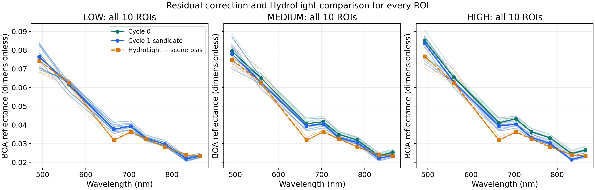
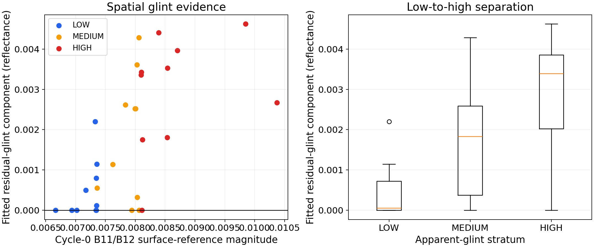
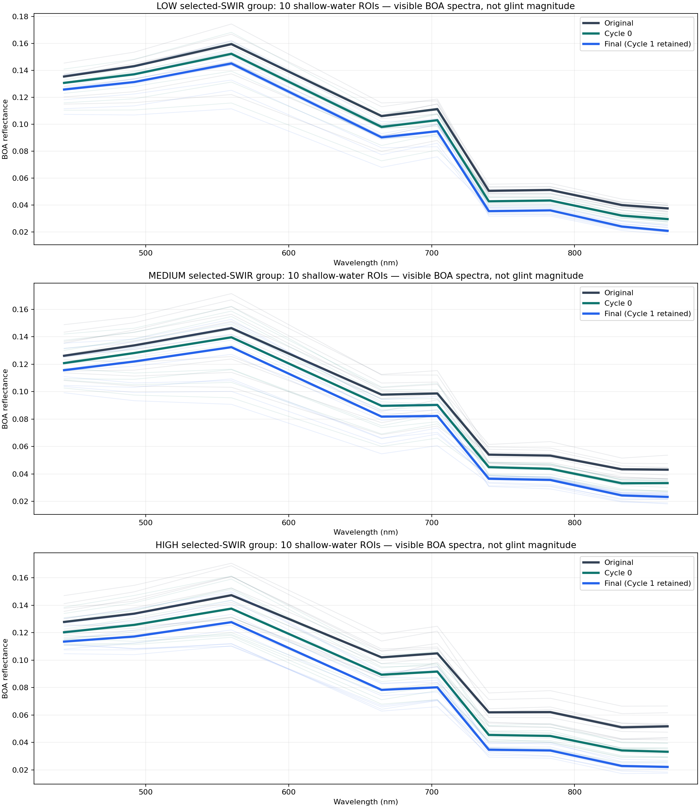
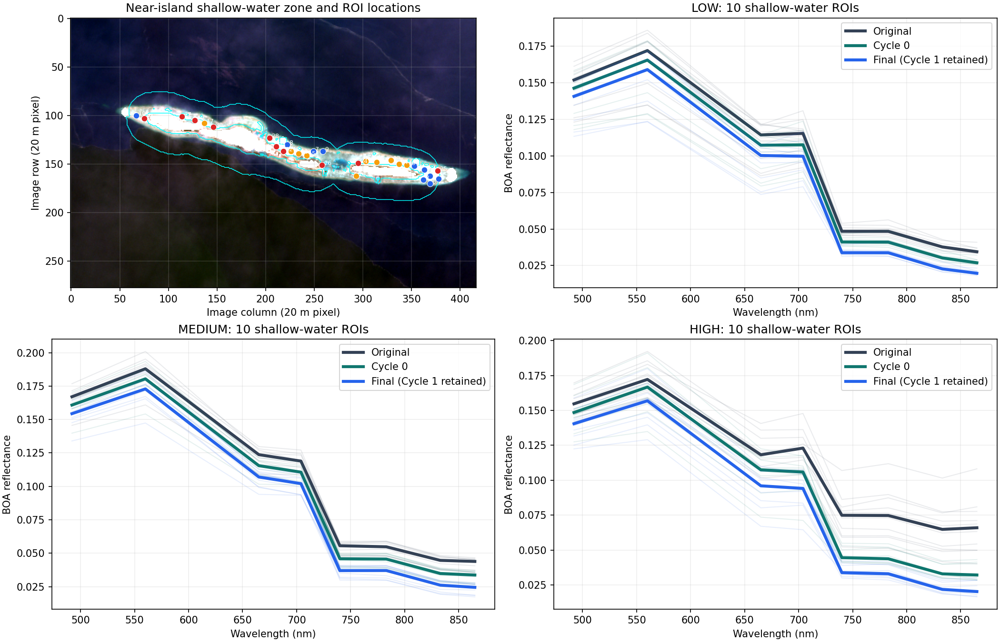

Sentinel-2 ACOLITE glint correction
Interactive scene comparison and explanation of the ACOLITE SWIR glint method.
Idea
Sentinel-2 L2A has already been atmospherically corrected by Sen2Cor. This workflow then applies the ACOLITE SWIR glint-correction method: align bands to 20 m, mask land/cloud/shadow, estimate glint separately from B11 and B12, and subtract the smaller candidate in Cycle 0. Deep-water validation decides whether Cycle 1 is accepted.
Method flowchart
Academic workflow: inputs, preprocessing, correction, validation decision and retained products.
One-pixel calculation
HydroLight simulation library
| Variable | Values |
|---|---|
| Simulations | 675 water-only spectra |
| Solar zenith | 20°, 25°, 30°, 35°, 40° |
| Chlorophyll-a | 0.05, 0.1, 0.5 mg m⁻³ |
| CDOM at 440 nm | 0.01, 0.03, 0.06 m⁻¹ |
| TSM / NAP | 15 values from 0.1 to 80 g m⁻³ |
| Wind | 5 m s⁻¹ |
| Platform response | S2A, S2B, S2C |
HydroLight is a deep-water simulation reference used in residual validation. It does not force the satellite image to match a model colour. Open the HydroLight simulation package.
Interactive result map
2024-09-25 opens as the main example because it retained Cycle 1. Choose any retained scene, correction stage and display stretch. Zoom to inspect the island, reef and water pattern.
Deep-water analysis
Deep water has no bottom signal, so it provides the formal Cycle 1 decision.


For 2024-09-25, the validation accepted the additional Cycle 1 correction.
Shallow-water analysis
Shallow water checks whether the accepted correction is applied safely over reef water. It does not decide Cycle 1.

